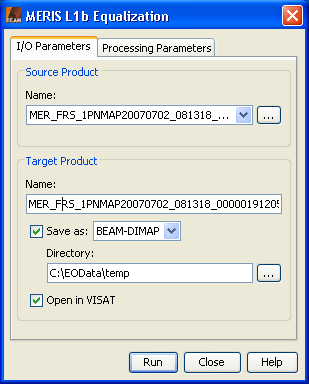
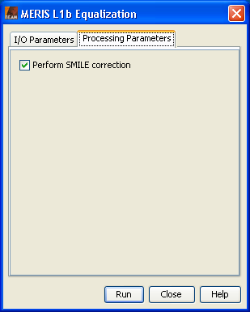

| MERIS L1b Equalization - Processor Description |
|
The MERIS Equalization tool can be invoked from the VISAT tools menu by selecting
the Equalization (MERIS) command. In the command line it is
available by means of the Graph Processing Tool gpt which is located in the BEAM bin
directory. Please type gpt Equalize -h for further information.
Selecting the Equalization (MERIS) command from the VISAT tool menu pops up the following dialog:

Name:
Here the user specifies the name of the source product. The combo box presents
a list of all products open in VISAT. The user may select one of these
or, by clicking on the button next to the combo box, choose a product
from the file system.
Name:
Used to specify the name of the target product.
Save as:
Used to specify whether the target product should be saved to the file system. The
combo box presents a list of output file formats currently supported by BEAM.
The text field allows to specify a target directory.
Open in VISAT:
Used to specify whether the target product should be opened in VISAT. When the
the target product is not saved, it is opened in VISAT automatically.

Reprocessing version:
Specifies the version of the reprocessing the product comes from. Depending on version different LUTs are used.
If set to AUTO_DETECT the processor tries to detect the reprocessing version. This is the default value.
The equalization algorithm supports data from the 2nd or 3rd reprocessing.
The only difference lies in the LUTs used. Depending on the value of the field software_ver in
the MPH of the MERIS product the appropriate LUT is chosen to retrieve the coefficients (if AUTO_DETECT is
selected).
If the software_ver is between MERIS/4.1 and MERIS/5.06 or between
MEGS-PC/7.4 and MEGS-PC/7.5 the product is considered to be from the 2nd reprocessing.
If the software_ver is above MEGS-PC/8.0 the product is considered to be from the 3nd reprocessing.
Perform SMILE correction:
Specifies if the SMILE correction shall be performed or not. this option should be disabled, if the selected source
product is already SMILE corrected or if a subsequent processing step does it.
Perform radiance-to-reflectance conversion:
Specifies if the input TOA radiance values shall be converted to TOA reflectances.
If the conversion is omitted the result of the equalization processor can be used like a standard MERIS L1b
product for further processing.
Run:
Creates the target product. The processing is actually deferred until its band data is accessed, either by
writing the product to a file or by viewing the band data. If the Save as option is checked, the processing
is triggered automatically.
Close:
Closes the dialog.
Help:
Displays this page in VISAT Help.